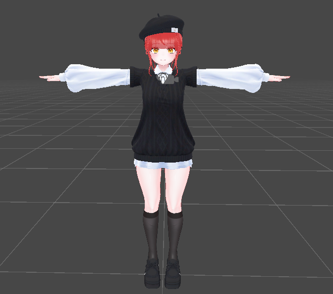
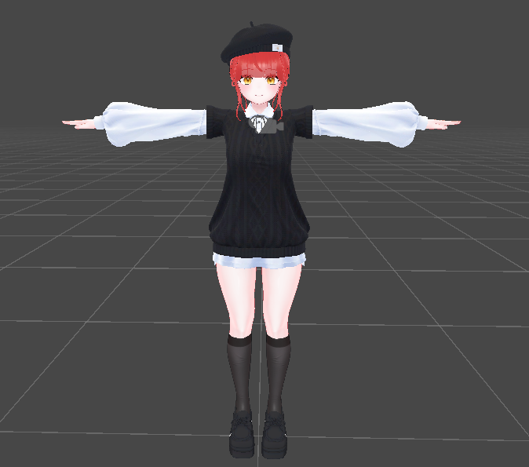
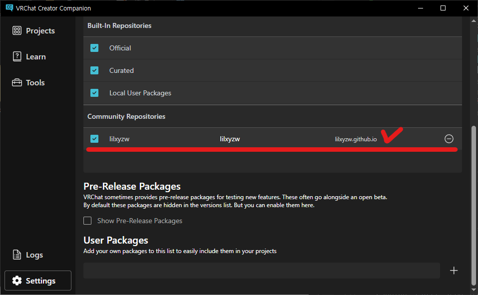

#Unity.3D / 1편. VCC 세팅하기
0. 들어가며
우리는 앞으로 Unity를 이용하여 3D 인체 모델의 의상을 변경하고, 소위 '뚜따'라고 불리우는 과정을 진행할 예정이다. 필자는 Unity를 게임 엔진으로서 다루어본 적만 있기 때문에 이 글을 작성하며 같이 공부해 볼 것이다.
* 그럴 상황은 없을 거라고 생각하지만 만일 오류가 생겼다면 최대한 내가 코딩을 잘 모른다는 가정 하에 troubleshooting 과정을 밟을 것이다.
1. 배경 지식
나는 버츄얼 유튜버나 인터넷 방송에 대해서는 완전히 문외한이다. 따라서 먼저 배경 지식을 쌓을 필요가 있었다.
알아보니 보통 VRChat에서 사용하는 에디터(API)를 사용하여 사용자의 모습을 대체할 '아바타'를 만들고, 이걸 본 게임에서뿐만 아니라 .fbx, .vsfavatar, .vrm 등의 포맷을 통해 외부로 export하여 방송에 활용하는 방법이 주가 되는 것 같다.
본체를 구성하는 요소 중 얼굴 및 신체는 기본이 되는 모델이 따로 있다. 대표적으로 Manuka, Moe, Mint, Chiffon 등으로 상당히 많다.
이 기본 모델을 수정하는 '뚜따' 과정을 거치면 자신만의 아바타를 소유할 수 있게 되는 것이다.(아래는 의상 수정의 예시이나,실제로는 체형, 얼굴, 눈 색, 헤어스타일 등 많은 부분의 수정이 가능하다.)
 

2. 용어 정립
아무래도 Unity와 같은 프로덕션 툴을 다룰 때에는 이것저것 용어가 많이 나올 수밖에 없다.
다 알 필요는 없지만 가장 필요한 것들만 아래 표로 간단히 정리해 보자.
| 이름 | 정의 |
|---|---|
| Mesh(메쉬) | 3D 모델의 기본 구성 요소. Vertex, Edge, Face로 구성된 Polygon의 집합. |
| Vertex(버텍스) | Mesh의 꼭짓점. |
| Edge(엣지) | 두 개의 Vertex를 연결하는 선. |
| Face(페이스) | Edge의 집합인 면. |
| Polygon(폴리곤) | Vertex의 집합인 2D 면. |
| Topology(토폴로지) | Mesh의 Polygon 배치 방식. |
| UV Mapping | 3D 모델의 표면을 평면으로 펼친 후, Texture를 입히는 것. |
| Texture(텍스쳐) | Mesh 표면에 입히는 2D 이미지. |
| Normal Map | 빛의 방향성을 조정하여 Mesh가 디테일해 보이도록 하는 Texture. |
| Specular Map | 물체 표면의 반사광을 제어하는 Texture. |
| Shader(쉐이더) | 3D 모델의 표면의 렌더링 방식을 정의한 코드. |
| Rigging(리깅) | 3D 모델에 뼈대(Bones)를 추가하여 움직임을 구현하는 것. |
| Skinning(스키닝) | 리깅이 완료된 뼈대를 Mesh와 상호작용하도록 하는 것. |
| Blendshape(Morph Target) | 표정이나 신체의 변형을 위한 상태(Parameter)를 저장한 것. |
3. On your mark
먼저 VRChat Creator Companion(VCC)를 내려받아 준다.
현재 VCC의 권장 버전은 Unity 2022.3.22f1이다. 해당하는 버전의 Unity가 설치되어 있다는 가정 하에, 일단 Create New Project를 선택하여 새 프로젝트를 만들어 보자.
Unity 2022 Avatar Project를 선택하고, 프로젝트 이름과 저장 경로를 마음에 드는 곳으로 지정해 준다.
Unity 2022 Avatar Project를 선택하고, 프로젝트 이름과 저장 경로를 마음에 드는 곳으로 지정해 준다.
지금 우리가 사용할 모델은 liltoon 쉐이더를 사용하는 것 같다. liltoon 쉐이더는 기본적으로 VCC에서 제공하는 컴포넌트가 아니기에 수동으로 추가해 주어야 한다.

Settings -> Packages -> Add Repository 순으로 클릭하고, https://lilxyzw.github.io/vpm-repos/vpm.json URL을 붙여넣고 Add 버튼을 클릭한다.

추가가 완료되면 위 사진처럼 표시될 것이다. 앞으로 다른 패키지를 설치할 때도 방금 한 것과 같이 설치하면 된다.
다음은 Project 설정이다. Project -> 생성한 프로젝트 -> Manage Project 순으로 클릭한다.
위 사진의 빨간 체크표시 있는 컴포넌트를 설치해 준다.
이번 시간에는 오늘은 VCC를 설치하고, 필요한 컴포넌트를 설치해 보았다.
다음 시간에는 프로젝트를 열어서 필요한 에셋을 불러오는 것부터 시작해볼 것이다.